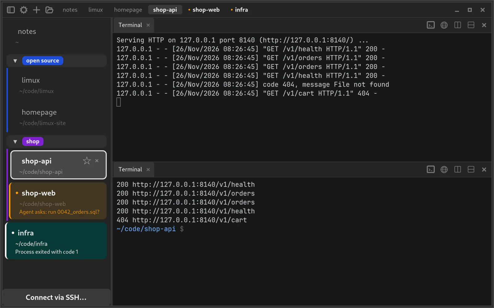
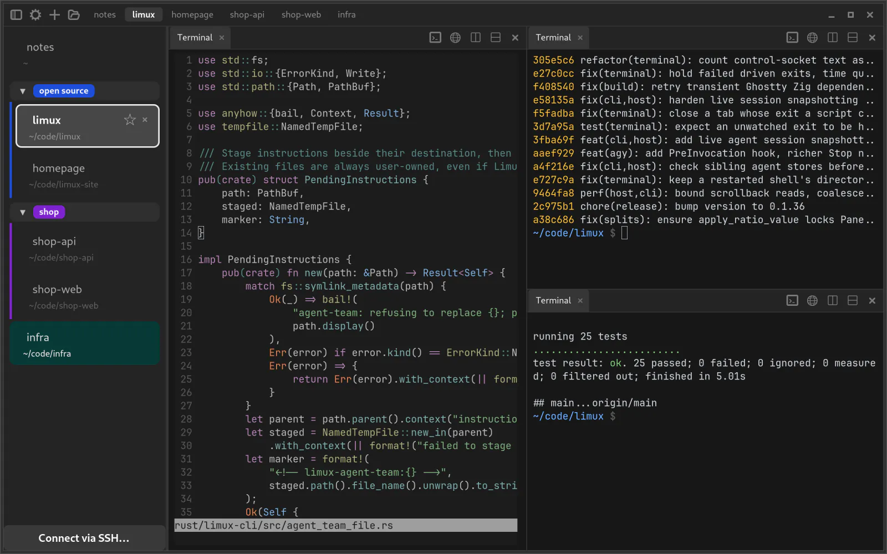
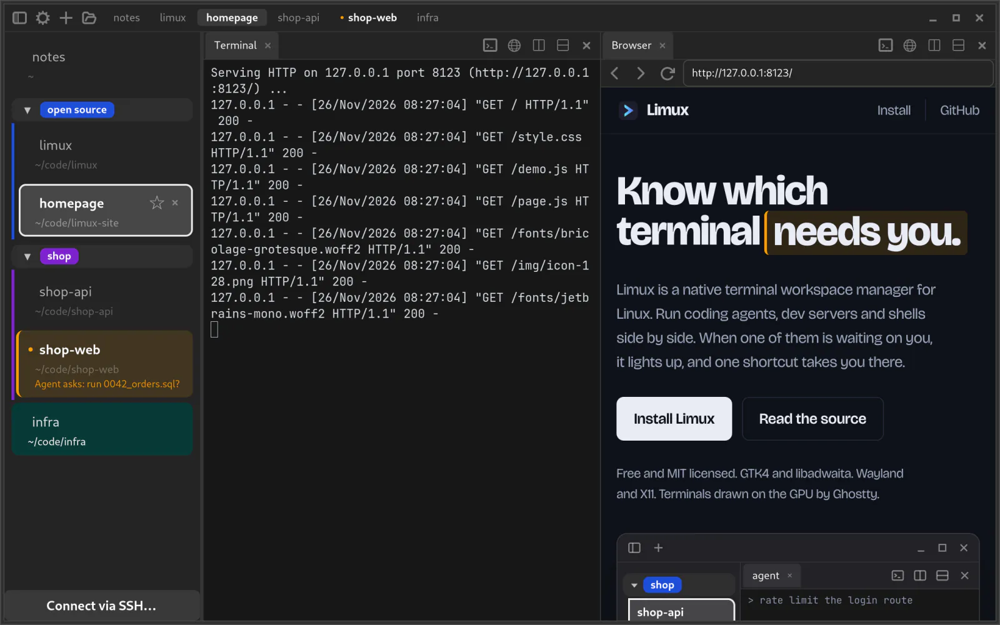

Know which terminal needs you.
Limux is a native terminal workspace manager for Linux. Run coding agents, dev servers and shells side by side. When one of them is waiting on you, it lights up, and one shortcut takes you there.
Free and MIT licensed. GTK4 and libadwaita. Wayland and X11. Terminals drawn on the GPU by Ghostty.
A working miniature. Click it, then use the real shortcuts or type help.
A tab bar only knows what is open
Limux also knows what finished, what broke and what is asking you a question. It tells you where you can see it, and keeps the output until you have read it.

The waiting one is amber
Notifications mark the tab, the workspace row and the top bar. Background tabs spin while they print. A process that dies out of sight keeps its output and exit code, with Restart and Close ready.

One workspace per project
Each workspace keeps its folder, splits, tabs and names. Color them, group them, pin favorites, drag them around. Quit and come back: the layout returns, and supported agents resume their session.

A browser in the next pane
Put the dev server and the page it serves in one window. It is WebKitGTK with its sandbox on by default and the Web Inspector one shortcut away.
- Your Ghostty config
- Limux reads it. Fonts, colors, palette and terminal behavior carry over.
- SSH that survives
- Opt in to tmux-backed remote tabs that reconnect after a drop and reattach after a restart. How it works
- Paste an image
- Paste a screenshot into a terminal and Limux inserts a file path. In a persistent SSH tab it uploads the file first.
- Autostart per workspace
- Give a workspace a command and every new terminal in it runs that command.
- Hooks on your actions
- Run your own script when a workspace is created or deleted. Good for git worktrees.
- Dead keys work
- Accents, Compose sequences and input methods reach the terminal on Wayland and X11.
Agents can use the window too
Every terminal in Limux knows its own workspace, pane and surface. The limux command uses that, so an agent can open a pane beside itself, start a helper, type into it, read its screen, and tell you when it is stuck. No flags, no keys, no server to run.
Install hooks once and your agents report in by themselves:
limux hooks setup- Codex
- Claude Code
- Gemini CLI
- Antigravity
- OpenCode opt-in
# Open a pane on the right and run the test watcher.
limux new-pane --direction right --command "npm test -- --watch"
# List what is open here, then talk to one of them.
limux list-panels
limux send --surface "$PEER" "npm run lint"
limux send-key --surface "$PEER" Enter
# Read its screen back.
limux read-screen --surface "$PEER" --lines 40# One pane per agent, beside the pane you are in.
# Writes AGENTS.md so they know how to talk to each other.
limux agent-team --agents codex,claude --cwd "$PWD"
# Look before you leap: nothing is written or launched.
limux --json agent-team --dry-run# Toast, sidebar message and unread marks, from any script.
limux notify --subtitle "needs review" \
--body "blocked on auth choice" "Input needed"
# Works at the end of a slow build too.
cargo build --release; limux notify "Build done"# Record running agent sessions, then flush the layout.
limux hooks snapshot --save-session
# See what would be recorded first.
limux hooks snapshot --dry-runKeys that stay out of your shell's way
Most defaults use Ctrl+Alt, so plain Ctrl editing keys still reach the program you are running. Change any of them in Settings > Keybindings.
| New workspace | Ctrl+Alt+Shift+N |
|---|---|
| Switch to workspace 1 to 9 | Ctrl+Alt+1-9 |
| Next or previous workspace | Ctrl+Alt+PageDown/Up |
| Most recent workspace | Ctrl+Alt+O |
| Next unread terminal | Ctrl+Alt+U |
| Previous unread terminal | Ctrl+Alt+Shift+U |
| Close workspace | Ctrl+Alt+Shift+W |
| Toggle sidebar | Ctrl+Alt+M |
| Split right | Ctrl+Alt+D |
|---|---|
| Split down | Ctrl+Alt+Shift+D |
| Focus pane by direction | Ctrl+Alt+Arrow |
| Zoom pane | Ctrl+Shift+Z |
| New terminal tab | Ctrl+Alt+T |
| Cycle tabs | Ctrl+Alt+Shift+Left/Right |
| Close tab | Ctrl+Shift+W |
| Close pane | Ctrl+Alt+W |
| Copy, paste | Ctrl+Shift+C/V |
|---|---|
| Find | Ctrl+Alt+F |
| Clear scrollback | Ctrl+Alt+K |
| Font size | Ctrl+Alt++/- |
| Browser page in a new split | Ctrl+Shift+L |
| Browser address bar | Ctrl+L |
| Web Inspector | Ctrl+Alt+I |
| Fullscreen | F11 |
No default shortcut matches that.
Install
Release packages need glibc 2.39 or newer: Ubuntu 24.04, Debian 13, Fedora 40, Arch, or a newer release of any of them.
Version 0.1.36. All downloads and checksums
curl -fLO https://github.com/am-will/limux/releases/download/v0.1.36/limux_0.1.36_amd64.deb
sudo apt install ./limux_0.1.36_amd64.debRemove it with sudo apt remove limux.
sudo dnf install https://github.com/am-will/limux/releases/download/v0.1.36/limux-0.1.36-1.x86_64.rpmRemove it with sudo dnf remove limux.
yay -S limux-binAny AUR helper works.
curl -fLO https://github.com/am-will/limux/releases/download/v0.1.36/Limux-0.1.36-x86_64.AppImage
chmod +x Limux-0.1.36-x86_64.AppImage
./Limux-0.1.36-x86_64.AppImageUses the GTK4, libadwaita, bubblewrap and xdg-dbus-proxy from your system.
curl -fLO https://github.com/am-will/limux/releases/download/v0.1.36/limux-0.1.36-linux-x86_64.tar.gz
tar xzf limux-0.1.36-linux-x86_64.tar.gz
cd limux-0.1.36-linux-x86_64
./install.sh --prefix="$HOME/.local"Or sudo ./install.sh for a system install. Add --uninstall to remove it.
git clone --recurse-submodules https://github.com/am-will/limux
cd limux
./scripts/build-ghostty.sh
cargo build --releaseNeeds Rust and Zig 0.16.0. Full steps
Before you ask
Is this tmux with a GUI?
No. tmux multiplexes inside one terminal. Limux is the terminal: native panes, a browser, notifications and a socket API around Ghostty surfaces. It can use tmux on a remote host to keep SSH sessions alive, and it runs tmux like any other program.
I do not use coding agents. Is it still for me?
Yes. Agents are programs in a terminal. Everything here works for a build, a log tail or an editor.
Does it phone home?
No. Limux has no telemetry and no account. The control API is a Unix socket on your machine. It makes SSH connections and loads web pages when you ask it to.
Will it run on Ubuntu 22.04?
No. It needs GTK 4.10 or newer, libadwaita, WebKitGTK 6.0 and, for release packages, glibc 2.39. Issue 10 tracks the request.
What about macOS?
Limux is a Linux port of the ideas in cmux, which is a native macOS app. Use that.